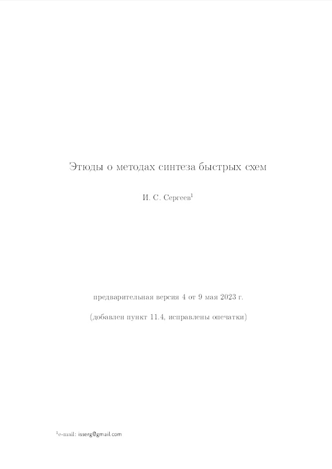
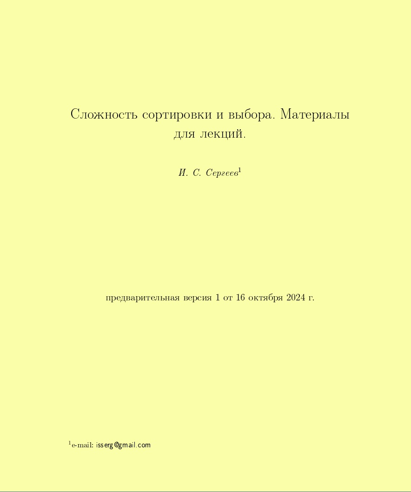

Igor S. Sergeev
Igor S. Sergeev
pronounced as [igor' sergeyev]
I'm a researcher in Theoretical computer science with the main focus of interests in the complexity of computations (circuit synthesis, fast
algorithms etc.).
Short bio
Current affiliation: Research institute Quant (Moscow), since 2007
Books
|
|
Stasys Jukna, Igor Sergeev
Complexity of linear boolean operators
Foundations and Trends in Theoretical Computer Science. 2013. 9(1), 1-123.
DOI
Book's homepage providing errata, comments etc.
PDF containing hyperlinks
|
|

|
Igor S. Sergeev
Etudes on the methods of designing efficient circuits
A draft of a book illustrating ideas behind the
methods of synthesis of fast circuits. Its goal is to provide a systematic view of
the most fruitful ideas leading to fast computation methods. The
exposition is arranged around the computational model of circuits
of functional elements and its particular case, formulae. The proposed examples
cover mainly boolean and arithmetic (algebraic) computations.
Current version (dated by 28.05.2025) RUS ENG
DOI
|
|

|
Igor S. Sergeev
Complexity of sorting and selection. Materials for lectures
A draft of a book that can serve as a course of lectures on the complexity of classical sorting and selection problems. Along with the standard material, it contains proofs of some recent nontrivial results, such as a uniform complexity bound for sorting of a poset, an asymptotically optimal multiselection algorithm, a lower bound on the complexity of comparator networks for sorting, etc.
Current version (dated by 05.03.2025) RUS ENG
DOI
|
Research papers
Most of my papers are available online, others can be freely accessed upon request via email
The list of my scientific papers is also available at
Google Scholar,
Researchgate (all English papers except very recent),
Mathnet,
Istina (all Russian papers except very recent)
My permanent coauthors (more than one paper):
Sergey B. Gashkov (scientific advisor),
Stasys Jukna,
Mikhail I. Grinchuk
[45] Sergeev I. S.
Economical formulae for symmetric boolean functions.
(submitted to
Matematicheskie Voprosy Kibernetiki)
PDF
◈ An extended and improved version of [
25] containing new upper bounds
on the formula depth and complexity of general symmetric boolean functions.
Separately, a refined approach for implementation of threshold symmetric functions is proposed.
For example, over the basis of all binary boolean functions the complexity of general symmetric functions of
n variables,
the counting function of
n variables, and the majority function of
n variables are
O(n2.85),
O(n2.82),
O(n2.77), respectively.
[44] Sergeev I. S.
Lower bounds on the additive
complexity of linear operators and bilinear algorithms for matrix and polynomial multiplication over GF(2).
(submitted to
Matematicheskie Zametki)
slides
◈ We establish a lower bound 5n–o(n) on the
complexity of an explicit boolean n×n matrix
with respect to implementation by additive circuits over GF(2).
It seems that only 3n–o(n) bounds were previously known.
Also we obtain complexity lower bounds 3n–o(n)
for an explicit n×n circulant matrix, and for the Sierpiński matrix of the same size.
Along the way, we prove lower bounds on the additive complexity of bilinear algorithms:
(4–o(1))n2
for multiplication of n×n matrices,
5n–o(n) for
multiplication of degree n–1 polynomials,
and 4n–o(n) for the cyclic
convolution of order n over GF(2).
Conference version: in Proc. PTK'20 (Moscow, 2024).
[43] Sergeev I. S.
On the complexity of fanout-bounded parallel prefix circuits.
J. Applied and Industrial Math. 2024.
18(4), 850-859.
DOI (translation of the
paper from
Diskretnyi Analiz i Issledovanie Operatsii)
◈ We prove a lower bound 0.75(n–1)2n on the complexity of
a universal fanout-2 depth-n prefix circuit on 2n inputs
improving over the previous lower bound 0.5(n+1–o(1))2n due to F. Fich (1983)
and getting closer to the upper bound (n–0.5)2n by P. Kogge and H. Stone (1973).
We also propose a number of simple constructions and upper complexity bounds on fanout-2 prefix circuits of depth n+k,
for small k's.
[42] Sergeev I. S.
On the additive complexity of some integer sequences.
Mathematical Notes. 2024.
115(3), 378-389.
DOI (translation of the
paper from
Matematicheskie Zametki)
◈ The paper contains a few results on the additive complexity. (i) We improve the N. Pippenger's upper bound (1980) on the complexity of the class of
m×n matrices with bounded by
q coefficients in a linear term from
A + O(m+n) to
A + n, where
A = min(m, n)log2q + (1+o(1))H/log2H, and
H = mnlog2q, and it is tight. Principally, it follows from [
29]. (ii) For the sequence
{2, 22, ..., 2n–1, 2n–1}, we obtain a rather accurare complexity
n + (2±o(1))n1/2 improving the asymptotic of the `second term' in bounds by P. Downey, B. Leong, R. Sethi (1981). (iii) D. Dobkin and R. J. Lipton (1980) for an explicitly given polynomially bounded sequence of size
n proved a lower bound
n + n2/3–o(1). We construct explicit sequences of size
n: (a) of polynomially bounded numbers, and of complexity
n + Ω(n1–ε), for any
ε>0; (b) of numbers bounded by
nO(log n), and of complexity
n + Ω(n).
Conference version: in Proc. DMTCS'11 (Moscow, 2023).
[41] Sergeev I. S.
A lower bound on the monotone switching complexity of the threshold function Tnn-1. Diskretnaya Matematika (Discrete Mathematics). 2023.
35(4), 126-131.
DOI (in Russian)
◈ M. M. Halldórsson, J. Radhakrishnan and K. V. Subrahmanyam (1993) proved a lower bound
Ω(n log log log n)
on the complexity of computation of the threshold symmetric function Tnn-1 by monotone switching
(contact) networks. We improve this bound to Ω(n log log n) by a simpler argument.
[e13] Sergeev I. S.
An explicit finite Bk-sequence. arXiv ePrints. 2023. Art. 2304.03988.
DOI PDF
◈ For any
n and
k, we construct an explicit (that is, computable in polynomial time) example of a dence enough integer
Bk-sequence of size
n consisting of elements bounded by
nk+o(k). It seems that in the case of growing
k's, such examples were missed in literature. A fragment of [
42].
[e12] Sergeev I. S.
Notes on the complexity of coverings for Kronecker powers of symmetric matrices. arXiv ePrints. 2022. Art. 2212.01776.
DOI PDF
◈ J. Alman, Y. Guan, A. Padaki (2022) proposed a new method for constructing low-complexity coverings of Kronecker powers of matrices and improved an upper bound on the depth-
2 additive complexity of the Sierpiński (disjointness) matrix stated in the
book. We provide an alternative proof for the case of symmetric matrices in a stronger form. This allows to further improve the above upper bound.
⌘ J. Alman and B. Li (
2025) further developed their method and (slightly) improved
the complexity of computing Sierpiński matrices.
[40] Sergeev I. S.
On the multiplicative complexity of polynomials.
Discrete Mathematics and Applications. 2024.
34(1), 29-32.
DOI (translation of the
paper (2022) from
Diskretnaya matematika)
◈ We show that the multiplicative (nonscalar) complexity of the class of complex degree-d polynomials of n variables is of order n⌈d/2⌉, for constant d, improving previously known lower bounds for odd d's. More accurate estimates are provided for the class of cubic polynomials.
[c20] Sergeev I. S.
Programs with time-lags.
Proc. PTK'19 (online, 2021). Kazan: Izd. KFU, 2021, 123-127.
PDF (in Russian)
◈ We introduce a model of programs reflecting a conveyor way of computations and provide a few simple examples to illustrate some effects on the complexity.
[39] Sergeev I. S.
Formula complexity of a linear function in a k-ary basis.
Mathematical Notes. 2021.
109(3), 445-458.
DOI (translation of the
paper from
Matematicheskie Zametki)
◈ We adapt V. M. Khrapchenko's formula size lower bound method (1971) to k-ary unate bases Uk by introducing appropriate complexity measures on graphs. As a consequence, we obtain a new lower bound Ω(n1.53) for the formula complexity of a linear boolean function of n variables in the basis U3 improving the result by H. Chockler and U. Zwick (2001). Also, we obtain an accurate form
n1+Θ(1/log k)
for the order of the formula complexity of linear functions in bases Uk as k→∞.
[38] Sergeev I. S.
On the upper bound of the complexity of sorting.
Computational Mathematics and Mathematical Physics. 2021.
61(2), 329-346.
DOI (translation of the
paper from
Zhurnal Vychislitel'noi Matematiki i Matematicheskoi Fiziki)
◈ We prove that the sorting of
n elements of a linearly ordered set is possible in
log2(n!) + o(n) comparisons in the worst case, thus resolving a long-standing problem from information theory.
Previously known upper bounds were of the form
log2(n!) + Θ(n), even for the average case complexity.
Conference version: in Proc. sPTK'19 (online, 2020).
⌘ D. Taranovsky on his
page claims to prove the same upper bound in 2020. However, the exposition there is too vague to understand whether it hides a correct proof (just my personal impression).
[38'] Sergeev I. S.
On the asymptotic complexity of sorting. Electronic Colloquium on Computational Complexity. 2020. TR20-096. PDF is available on the
web-page
◈ A preprint version of [
38], includes an additional example to illustrate a simplified method of sorting.
[37] Jukna S., Seiwert H., Sergeev I. S.
Reciprocal inputs in arithmetic and tropical circuits. Electronic Colloquium on Computational Complexity. 2020. TR20-178. PDF is available on the
web-page
also published in Russian in Matematicheskie Voprosy Kibernetiki (Mathematical Problems of Cybernetics). Vol. 20. Moscow: Fizmatlit, 2022, 61-80.
DOI PDF is available on the
web-page
◈ We show that additional reciprocal inputs cannot help to reduce the complexity of monotone circuits in the basis {+, ×} more than quadratically in both arithmetic and tropical settings, though it is well-known that a single division gate at the output can lead to superpolynomial savings.
[36] Sergeev I. S.
Multilevel representation and complexity of circuits of unbounded fan-in gates.
Moscow University Math. Bulletin. 2020.
75(3), 121-125.
DOI (translation of the
paper from
Vestnik Moskovskogo Universiteta. Seriya 1. Matematika. Mekhanika) PDF is available
here
◈ We propose a new exposition of a (modified) multilevel representation synthesis method invented by E. I. Nechiporik (1962) and provide an alternative proof for the asymptotic Shannon complexity of AC-circuits with free negations, and also some bounds for the bounded-depth version of the problem. A supplementary result to [
30].
[35] Gashkov S. B., Sergeev I. S.
On the meaning of works by V. M. Khrapchenko. Prikladnaya Diskretnaya Matematika (Applied Discrete Mathematics). 2020. 2(48), 109-124.
DOI
PDF (in Russian) is available on the
web-page;
English self-translation:
PDF
◈ The paper surveys main works and results by V. M. Khrapchenko (1936-2019).
[34] Gashkov S. B., Sergeev I. S.
Multiplication. Chebyshevskii Sbornik (Chebyshev's Collection). 2020.
21(1), 101-134.
DOI
PDF (in Russian) is available on the
web-page;
English self-translation:
PDF
◈ A survey of modern methods of multiplication of numbers and polynomials.
[33] Sergeev I. S.
On the complexity of monotone circuits for threshold symmetric Boolean functions.
Discrete Mathematics and Applications. 2021.
31(5), 345-366.
DOI (translation of the
paper (2020) from
Diskretnaya matematika)
◈ We establish the monotone circuit complexity of the threshold-2 symmetric boolean function of n variables in an accurate form 2n + Θ(n1/2), thus resolving an old problem by L. Adleman. Even tighter complexity result 3n + O(log n) – O(1) we obtain for the threshold-3 symmetric function improving a lower bound due to P. Dunne (1985). Basing on the method by A. C. Yao (1975) we provide accurate upper bounds of the form 2nlog2k + o(n) on the complexity of symmetric functions with small thresholds k.
Conference version: in Proc. sDMA'13 (Moscow, 2019).
[32] Sergeev I. S.
On a relation between the depth and complexity of monotone Boolean functions.
J. Applied and Industrial Math. 2019.
13(4), 746-752.
DOI (translation of the
paper from
Diskretnyi Analiz i Issledovanie Operatsii)
PDF is available
here
◈ For the formula depth and complexity of a function f in a binary basis, the trivial inequality D(f) ≥ log2L(f) holds. Stronger inequalities D(f) ≥ clog2L(f) with c > 1 were previously obtained for some bases and special function sequences, e.g. c ≥ 1.5 for the monotone arithmetic basis due to D. Coppersmith and B. Schiber (1992). We prove the first depth-complexity separation result of this sort for an arithmetic-type boolean basis, namely, with c > 1.06 for the monotone basis {∨, ∧}.
[e11] Sergeev I. S.
On the monotone complexity of the shift operator. arXiv ePrints. 2019, 2020. Art. 1905.10747.
DOI PDF
◈ We prove tight in order lower bound on the monotone circuit complexity of the boolean permutation operator (generalizing the boolean shift operator) by adaptation of an argument proposed by A. V. Chashkin (2006). It also provides an alternative proof of the known lower bound for the shift operator as well.
Comment: in the first version of the paper, I missed that the lower bound on the complexity of the shift operator was already proved by E. A. Lamagna and J. E. Savage (1974).
[31] Sergeev I. S.
On the complexity of Fibonacci coding.
Problems of Information Transmission. 2018.
54(4), 343-350.
DOI (translation of the
paper from
Problemy Peredachi Informatsii)
PDF is available
here
◈ We show that conversions between binary and Fibonacci (Zeckendorf) representations of n-bit integer numbers may be implemented by boolean circuits of complexity O(M(n)log n), where M(n) stands for the complexity of multiplication of n-bit numbers, improving over a simple complexity bound O(n2) due to C. Ahlbach, J. Usatine, C. Frougny, N. Pippenger (2013). We also obtain analogous results for generalized representations, including clog1/2nn complexity bounds for r-Fibonacci representations.
[e10] Sergeev I. S.
Some comments on the structure of the best known networks sorting 16 elements. arXiv ePrints. 2018. Art. 1810.11262.
DOI PDF
◈ M. W. Green (1969) and D. C. van Voorhis (about 1970) proposed the best known sorting networks for 16 elements in terms of complexity (60) and depth (9), respectively. These networks have a rather intricate construction. We propose an explanation of ideas behind the structure of the networks.
[30] Sergeev I. S.
On the complexity of bounded-depth circuits and formulas over the basis of [unbounded] fan-in gates.
Discrete Mathematics and Applications. 2019.
29(4), 241-254.
DOI (translation of the
paper (2018) from
Diskretnaya matematika)
PDF is available
here
◈ We obtain a number of asymptotic results concerning the complexity of the class of boolean functions of n variables with respect to implementation by various types of AC circuits and formulas of bounded depth, improving e.g. an earlier result by V. Dančík (1996). In particular, we show that the Shannon complexity of de Morgan AC-circuits is ~2n/2+1, and it is achieved in depth 3 (this result is final). A principal ingredient of the proofs is a special covering of the boolean cube by what we call pseudospheres, that generalizes coverings by spheres.
Comment: the word “unbounded” is missed in the title of the translated paper.
Conference version: in Proc. DMTCS'10 (Moscow, 2018).
[29] Sergeev I. S.
Rectifier circuits of bounded depth.
J. Applied and Industrial Math. 2018.
12(1), 153-166.
DOI (translation of the
paper from
Diskretnyi Analiz i Issledovanie Operatsii)
PDF is available
here
◈ E. I. Nechiporuk (1963) showed that the asymptotic linear complexity mn/log2(mn) of the class of boolean (m, n)-matrices is achieved in depth 3
for various ratios between m and n. N. Pippenger (1979) proved that the asymptotic holds for all m, n, except of some extremely unbalanced cases. We show that in the general case, the asymptotic is achieved by depth-3 circuits, and this result is final. Also, we slightly improve Pippenger's upper bounds on the linear complexity of classes of integer (m, n)-matrices with bounded by q coefficients from
A + O(n) to A + n, where
A = 3mlog3q + (1+o(1))H/log2H, and H = mnlog2q, assuming m ≤ n, and it is tight.
[28] Sergeev I. S.
On the real complexity of a complex DFT.
Problems of Information Transmission. 2017.
53(3), 284-293.
DOI (translation of the
paper from
Problemy Peredachi Informatsii)
PDF is available
here
◈ Improving a long-standing result, J. van Buskirk and T. J. Lundy (2007) proved that the complex DFT of order
N = 2n may be computed via
~3.777...N log2N real arithmetic operations. We show that this upper bound may be further improved to
~3.76875N log2N.
Conference version: in Proc. PTK'18 (Penza, 2017).
⌘ J. Alman and K. Rao (
2023) established a new record bound
~3.75N log2N by a simpler method.
[27] Gashkov S. B., Sergeev I. S.
On the additive complexity of GCD and LCM matrices.
Mathematical Notes. 2016.
100(2), 199-212.
DOI (translation of the
paper from
Matematicheskie Zametki)
PDF is available
here
◈ We obtain asymptotically tight complexity bounds for the GCD matrix (formed by numbers gcd(i, j)) when implementing by circuits in the additive basis {+}, and for the analogously defined LCM matrix with respect to computation by circuits in addition-subtraction basis {±}. For the latter result, we propose a new nontrivial factorization of the LCM matrix in which all matrices have nonnegative integer entries.
Conference version: in Proc. DMTCS'9 (Moscow, 2015).
[26] Sergeev I. S.
Upper bounds for the size and the depth of formulae for MOD-functions.
Discrete Mathematics and Applications. 2017.
27(1), 15-22.
DOI (translation of the
paper (2016) from
Diskretnaya matematika)
PDF is available
here
◈ We obtain new upper bounds for the size and the depth of formulae for some MOD-functions (that is, functions counting n bits modulo m). In particular, we improve the result of A. Chin (1990) on the depth of counting modulo 3 in the standard boolean basis {∨, ∧, ¯} to 2.8 log2n + O(1) and substantially simplify the proof.
Conference version: in Proc. yDMA'10 (Moscow, 2015).
[25] Sergeev I. S.
Complexity and depth of formulas for symmetric Boolean functions.
Moscow University Math. Bulletin. 2016.
71(3), 127-130.
DOI (translation of the
paper from
Vestnik Moskovskogo Universiteta. Seriya 1. Matematika. Mekhanika)
PDF is available
here
◈ Exploiting L. G. Valiant's idea of approximate computation of threshold symmetric functions, we further improve upper bounds [
21,
22] on the depth and complexity of general symmetric boolean functions, and, particularly, of counting and threshold functions. As a consequence, we obtain new record asymptotic bounds for the depth of multiplication of
n-bit numbers:
4.02 log2n in the full binary boolean basis, and
5.14 log2n in the standard boolean basis
{∨, ∧, ¯}. New bounds are nonconstructive.
⌘ The obtained bounds are further improved and the method is refined in the extended version [
45] of this paper.
[24, e8] Sergeev I. S.
On the complexity of computing prime tables on a Turing machine. arXiv ePrints. 2016. Art. 1604.01154.
DOI (self-translation of a
paper from
Prikladnaya Diskretnaya Matematika)
PDF
◈ M. Farah-Colton and M.-T. Tsai (2015) proved that the complexity of computing the table of primes between 1 and n on a multitape Turing machine is O(n log2 n /log log n). We improve this bound to O(n log n). Note that the complexity of computing
the table of composite numbers below n is Θ(n log n).
[e7] Sergeev I. S.
On the circuit complexity of the standard and the Karatsuba methods of multiplying integers. arXiv ePrints. 2016. Art. 1602.02362.
DOI PDF
◈ We provide accurate upper bounds on the boolean circuit complexity of the standard and the Karatsuba methods of integer multiplication.
Conference version: in Proc. IMT'22 (Moscow, 2014).
[e6] Sergeev I. S.
On relative OR-complexity of Boolean matrices and their complements. arXiv ePrints. 2014. Art. 1407.4626.
DOI PDF
◈ We construct explicit boolean matrices whose OR-complexity differs significantly from the complexity of their complement matrices. An additional material for the
book.
Conference version: in Proc. PTK'17 (Kazan, 2014).
[23] Kaski P., Koivisto M., Korhonen J. H., Sergeev I. S.
Fast monotone summation over disjoint sets. Information Processing Letters. 2014.
114(5), 264-267.
DOI
◈ We prove accurate upper complexity bounds on the complexity of submatrices of the Sierpiński (disjointness) matrix improving preliminary results by the authors (including [
e3]) and provide some applications.
[22] Sergeev I. S.
Upper bounds on the depth of symmetric Boolean functions.
Moscow University Computational Mathematics and Cybernetics. 2013.
37(4), 195-201.
DOI (translation of the
paper from
Vestnik Moskovskogo Universiteta. Seriya 15. Vychislitel'naya Matematika i Kibernetika)
PDF is available
here
◈ A companion paper for [
21]. Contains analogous results for the depth of symmetric boolean functions, also improving upper bounds due to E. Grove (1993).
Conference version: in Proc. yDMA'9 (Moscow, 2013).
⌘ The obtained bounds were further improved in [
25], but nonconstructively.
[21] Sergeev I. S.
Upper bounds for the formula size of symmetric Boolean functions.
Russian Mathematics. 2014.
58(5), 30-42.
DOI (translation of the
paper from
Izvestiya Vysshikh Uchebnykh Zavedenii. Matematika)
PDF is available
here
◈ M. S. Paterson, N. Pippenger and U. Zwick (1990-1993) completed the theory of optimal constructing of compressor trees from compressing units with the main application to obtaining low-depth or low-size formulae for symmetric boolean functions from carry-save adder (CSA) modules. We implant an idea of modular computation and improve upper formula size bounds for symmetric functions in general, and for important particular cases: counting and threshold functions, with a consequence to the complexity of the integer multiplication.
Conference version: in Proc. yDMA'9 (Moscow, 2013).
⌘ The obtained bounds were further improved in [
25], but nonconstructively.
[20] Jukna S., Sergeev I.
Complexity of linear boolean operators.
Foundations and Trends in Theoretical Computer Science. 2013.
9(1), 1-123.
DOI
◈ The journal version of the
book.
[e5] Sergeev I. S.
Implementation of linear maps with circulant matrices via modulo 2 rectifier circuits of bounded depth. arXiv ePrints. 2013. Art. 1305.4389.
DOI PDF
◈ We obtain upper bounds on the bounded-depth XOR-complexity of boolean circulant matrices. A supplementary material for the
book.
[e4] Sergeev I. S.
A relation between additive and multiplicative complexity of Boolean functions. arXiv ePrints. 2013. Art. 1303.4177.
DOI PDF
◈ U. Zwick (1996) observed a simple relation between the multiplicative and the total monotone complexity of boolean functions, that is tight up to the order of magnitude. We prove a similar but asymptotically tight relation for boolean circuits over Zhegalkin basis, that is, arithmetic circuits over GF(2). It follows from an old result by E. I. Nechiporuk (1962).
[19] Gashkov S. B., Sergeev I. S.
On complexity and depth of Boolean circuits for multiplication and inversion over finite fields of characteristic 2.
Discrete Mathematics and Applications. 2013.
23(1), 1-37.
DOI (translation of the
paper from
Diskretnaya matematika)
PDF is available
here
◈ A full and improved version of [
9]. We provide accurate complexity estimates for multiplication and inversion in some special field towers, with applications to multiplication of polynomials. Namely, we obtain new upper bounds for the complexity of FFT in tower fields, leading to the currently record complexity bounds for multiplication of polynomials (via the Schönhage-type method). Say, the complexity of multiplication of binary degree-
n polynomials doesn't exceed
(10+o(1))nlog3nlog2logn.
Conference version: in Proc. sDMA'11 (Moscow, 2012).
⌘ D. Harvey, J. van der Hoeven and G. Lecerf (
2017) improved the complexity of polynomial multiplication to
O(n log n α(n)), where
α(n) is an extremely slowly growing function.
[18] Sergeev I. S.
On the complexity of parallel prefix circuits. Electronic Colloquium on Computational Complexity. 2013. TR13-041. PDF is available on the
web-page
◈ A full version of [
14]. We establish the exact complexity of the minimal width-
2n depth-
n general (parallel) prefix circuit improving over an earlier result by F. E. Fich (1982). It is
3.5·2n – (8.5+3.5(n mod 2))2⌊n/2⌋ + n + 5. We also provide a number of new upper bounds on the complexity of parallel prefix circuits under various restrictions, and better (than general) upper bounds on the complexity of prefix XOR-circuits, e.g.
(36/11–o(1))m for width
m and minimal depth.
Conference version: in Proc. sDMA'10 (Moscow, 2010).
⌘ The case of bounded-by-2-fanout prefix circuits is examined in more detail in [
43].
[17] Gashkov S. B., Sergeev I. S.
A method for deriving lower bounds for the complexity of monotone arithmetic circuits computing real polynomials.
Sbornik: Mathematics. 2012.
203(10), 1411-1447.
DOI (translation of the
paper from
Matematicheskii Sbornik)
PDF is available
here
◈ S. B. Gashkov (1987) proposed a method for proving lower bounds on the monotone arithmetic complexity of real polynomials corresponding to the thin (i.e. rectangle-free) sets. We slightly generalize his method and e.g. for explicitly given degree-
n polynomials, obtain nearly extremal bounds
n1–o(1) and
n1/2–o(1) on the overall and on the multiplicative complexity, respectively. By the way, we describe a procedure of reconstruction of multidimensional thin sets into one-dimensional equally thin sets of nearly the same density. For example, it also provides an explicit example of a circulant boolean
n×n matrix of nearly quadratic OR-complexity
n2–o(1).
Conference version: in Proc. PTK'16 (Nizhny Novgorod, 2011).
⌘ S. Jukna (
2017) proposed a simplified modification of our method.
[e3] Sergeev I. S.
On additive complexity of a sequence of matrices. arXiv ePrints. 2012. Art. 1209.1645.
DOI PDF
◈ P. Kaski, M. Koivisto and J. H. Korhonen (2012) obtained some upper bounds on the additive complexity of submatrices of the Sierpiński (disjointness) matrix. We improve these bounds and also prove a lower counterpart.
⌘ In the joint paper [
23], we obtained even better complexity upper bounds.
[e2] Sergeev I. S.
Upper bounds for the formula size of the majority function. arXiv ePrints. 2012. Art. 1208.3874.
DOI PDF
◈ We apply the idea by M. S. Paterson and U. Zwick (1993) of efficient generating low-depth compressor trees from compressing units with multiple-type inputs/outputs to constructing low-size formulas for symmetric boolean functions and improve the previously known complexity bounds.
⌘ The obtained complexity bounds are further improved in [
21] and [
25].
[e1] Sergeev I. S.
A note on the fast power series' exponential. arXiv ePrints. 2012. Art. 1203.3883.
DOI PDF
◈ An improvement over the complexity bounds [
11] for exponential and raising to a power of complex or real power series. The former costs as much as
~23/12 same-size multiplications, and the latter as
~27/8 multiplications.
[16] Gashkov S. B., Sergeev I. S.
Complexity of computation in finite fields.
J. of Mathematical Sciences. 2013.
191(5), 661-685.
DOI (translation of the
paper (2012) from
Fundamental'naya i Prikladnaya Matematika)
PDF is available
here
◈ A survey of some results on the complexity of implementation of arithmetic operations in finite fields by boolean circuits.
[15] Sergeev I. S.
Regular estimates for the complexity of polynomial multiplication and truncated Fourier transform. Prikladnaya Diskretnaya Matematika (Applied Discrete Mathematics). 2011. 4(14), 72-88.
PDF (in Russian) is available on the
web-page;
English self-translation:
PDF
◈ We construct circuits for the truncated Fourier transform (TFT) efficient either in complexity and depth, or in complexity and memory size, with application to the polynomial multiplication: complexity bounds are essentially the same as for unrestricted TFT algorithms. The latter in-place algorithm constitutes an improvement over the result due to D. Harvey and D. S. Roche (2010).
Conference version: in Proc. yDMA'7 (Moscow, 2009), and in Proc. yDMA'8 (Moscow, 2011).
⌘ A. Arnold (
2013) slightly improved the complexity of the in-place algorithm.
⌘ N. Coxon (
2022) proposed yet another in-place TFT algorithm of nearly the same complexity as those mentioned above.
[14] Sergeev I. S.
Minimal parallel prefix circuits.
Moscow University Math. Bulletin. 2011.
66(5), 215-218.
DOI (translation of the
paper from
Vestnik Moskovskogo Universiteta. Seriya 1. Matematika. Mekhanika)
PDF is available
here
◈ A brief version of [
18] (omitting most of proofs).
[13, e9] Grinchuk M. I., Sergeev I. S.
Thin circulant matrices and lower bounds on the complexity of some Boolean operators. arXiv ePrints. 2017. Art. 1701.08557.
DOI (self-translation of the
paper (2011) from
Diskretnyi Analiz i Issledovanie Operatsii)
PDF
◈ M. I. Grinchuk (1988) proved the existence of circulant boolean
n×n matrices of almost quadratic OR-complexity. We further tighten his result and as a consequence obtain an almost tight lower bound
Ω(n2/log6n) for the monotone complexity of the order-
n boolean convolution improving over the result by J. Weiß (1983).
⌘ In [
17], we proposed a constructive example of a circulant boolean matrix of almost quadratic OR-complexity.
[12] Gashkov S. B., Sergeev I. S.
On the complexity of linear Boolean operators with thin matrices.
J. Applied and Industrial Math. 2011.
5(2), 202-211.
DOI (translation of the
paper (2010) from
Diskretnyi Analiz i Issledovanie Operatsii)
PDF is available
here
◈ We resolve an old problem stated by B. S. Mityagin and B. N. Sadovskii (1965) of constructing a boolean matrix without
2×2 rectangles whose linear XOR-complexity is much smaller than the matrix weight, and consider some generalizations of this problem. In fact, we constructively prove almost maximal possible separations
OR(M)/XOR(M) between OR- and XOR-complexity of an
n×n boolean matrix
M in both rectangle-free (
n1/2–o(1)) and unrestricted settings (
n1–o(1)).
Conference version: in Proc. sDMA'10 (Moscow, 2010).
⌘ The questions of separations between linear measures of matrix complexity are thoroughly discussed in the
book.
[11] Sergeev I. S.
Fast algorithms for elementary operations on complex power series.
Discrete Mathematics and Applications. 2010.
20(1), 25-60.
DOI (translation of the
paper from
Diskretnaya matematika)
PDF is available
here
◈ We prove new upper bounds on the complexity of some elementary operations with complex or real power series. For instance, we show
that inversion or square root cost as much as
~5/4 same-size multiplications improving over the results by A. Schönhage (2000) and D. J. Bernstein (2004), and exponential costs as
~13/6 multiplications improving the bound due to J. van der Hoeven (2006).
Conference version: in Proc. sDMA'9 (Moscow, 2007).
⌘ D. Harvey (
2009) observed another and simpler way to prove the same complexity bound for exponential.
⌘ Complexity bounds for exponential and raising to a power were further improved in [
e1].
[10] Gashkov S. B., Sergeev I. S.
Fast Fourier transform algorithms.
in “Diskretnaya Matematika i eyo Prilozheniya” (Discrete Mathematics and its Applications). Part V. Moscow: Izd. IPM RAN, 2009, 3-23.
PDF (in Russian) with additional comments;
English self-translation:
PDF
◈ A survey of FFT algorithms in some rings with applications to polynomial multiplication. Contains a slight improvement of the bound from [
9].
[9] Gashkov S. B., Sergeev I. S.
The complexity and depth of Boolean circuits for multiplication and inversion in some fields GF(2n).
Moscow University Math. Bulletin. 2009.
64(4), 139-143.
DOI (translation of the
paper from
Vestnik Moskovskogo Universiteta. Seriya 1. Matematika. Mekhanika)
PDF is available
here
◈ We provide accurate complexity estimates for multiplication and inversion in some special field towers.
In particular, they lead to better asymptotic upper bounds for multiplication of binary
polynomials than those following from earlier works by J. von zur Gathen and J. Gerhard (1999) and D. J. Bernstein (2001).
⌘ Complexity bounds for multiplication were further improved in [
10] and [
19].
[8] Gashkov S. B., Sergeev I. S.
On design of circuits of logarithmic depth for inversion in finite fields.
Discrete Mathematics and Applications. 2008.
18(5), 483-504.
DOI (translation of the
paper from
Diskretnaya matematika)
PDF is available
here
◈ We implement inversion in finite fields GF(pn) by logarithmic depth arithmetic circuits over
GF(p) and provide accurate complexity estimates.
[7] Gashkov S. B., Sergeev I. S.
Bit-parallel circuits for arithmetic in finite fields.
NATO Science for Peace and Security. Ser. D. Information and communication security. Vol. 18, 2008. Boolean functions in cryptology and information security. 104-125.
DOI
PDF is available
here
◈ A survey of parallel circuits for operations in finite fields.
[6] Sergeev I. S.
On the complexity of the gradient of a rational function.
J. Applied and Industrial Math. 2008.
2(3), 385-396.
DOI (translation of the
paper (2007) from
Diskretnyi Analiz i Issledovanie Operatsii, Ser. 1)
PDF is available
here
◈ W. Baur and V. Strassen (1983) proved a classical relation C(∇ f) ≤ 4C(f) between the circuit complexity of a rational function f and its gradient in the arithmetic basis { ±,×, ⁄ }.
We improve it to C(∇ f) ≤ 3C(f) + n, where n is the number of variables of f.
[5] Sergeev I. S.
On constructing circuits for transforming the polynomial and normal bases of finite fields from one to the other.
Discrete Mathematics and Applications. 2007.
17(4), 361-373.
DOI (translation of the
paper from
Diskretnaya matematika)
PDF is available
here
◈ E. Kaltofen and V. Shoup (1998) for the problem of transition between the polynomial and normal representations of finite fields
GF(qn) proposed arithmetic circuits of subquadratic complexity
O(n1.82) over
GF(q). However, their polynomial-to-normal algorithm is probabilistic. We propose a pair of deterministic and seemingly simpler algorithms of similar complexity
O(n1.81) (the exponent was slightly improved due to the progress in the rectangular matrix multiplication). Better algorithms are proposed for normal bases of the so-called low multiplication complexity. We also obtain corollaries for the problems of computing Frobenius automorphisms and checking the linear independence of a normal system.
Comment: It's my first genuinely self-written journal paper. Thus, it suffers from an insufficiently informative abstract and introduction, and a lack of notions.
Conference version: in Proc. SCCS'16 (Saint Petersburg, 2006).
⌘ C. Umans (
2008) showed that the modular composition of degree-
n polynomials over the fields of characteristic
no(1) has almost linear complexity
n1+o(1). This result lowers the complexity of the algorithms for transitions in the fields of small characteristic to
O(n1.63) given the present-day (2023) bounds for the rectangular matrix multiplication.
[c2] Sergeev I. S.
On the depth of circuits for multiple addition and multiplication of numbers.
Proc. yDMA'6 (Moscow, April 2007). Part II. Moscow: Izd. IPM RAN, 2007, 40-45.
PDF (in Russian)
◈ We obtain almost tight bounds for the minimal depth of a compressor tree composed of the standard (3,2)-compressors (carry-save adders) in the full binary boolean basis. It constitutes a slight but practically meaningful improvement over the bounds by M. S. Paterson, N. Pippenger and U. Zwick (1992) in this particular case. Precisely, we bound the minimal depth d(n) of a compressor tree with n inputs as logλn – 2.7 < d(n) < logλn – 0.8, where λ ≈ 1.205.
[4] Gashkov S. B., Grinchuk M. I., Sergeev I. S.
Circuit design of an adder of small depth.
J. Applied and Industrial Math. 2008.
2(2), 167-178.
DOI (translation of the
paper (2007) from
Diskretnyi Analiz i Issledovanie Operatsii, Ser. 1)
PDF including a correction that wasn't translated is available
here
◈ We present and compare a few practical methods for shallow implementation of adder carry functions. Finally we construct an
n-digit adder of complexity
(8+o(1))n and depth
log2n + ((2+o(1))log2n)1/2 in the full binary boolean basis slightly improving the depth estimate for balanced adders made by V. M. Khrapchenko (1967).
⌘ M. I. Grinchuk (
2008) proved a new upper bound
log2n + log2log2n + O(1) on the depth of an
n-digit adder.
⌘ A. Hermann (
2020) constructed adders of linear complexity and depth
log2n + log2log2n + log2log2log2n + O(1).
[3] Sergeev I. S.
Inversion in finite fields of characteristic 2 using logarithmic depth.
Moscow University Math. Bulletin. 2007.
62(1), 29-33.
DOI (translation of the
paper from
Vestnik Moskovskogo Universiteta. Seriya 1. Matematika. Mekhanika)
PDF is available
here
◈ A brief version of [
2] (omitting most of proofs).
[2] Sergeev I. S.
On the logarithmic depth circuits for inversion in finite fields of characteristic 2. Matematicheskie Voprosy Kibernetiki (Mathematical Problems of Cybernetics). Vol. 15. Moscow: Fizmatlit, 2006, 35-64.
PDF (in Russian) is available on the
web-page;
English self-translation:
PDF
◈ B. Litow and G. Davida (1988) and J. von zur Gathen (1990) constructed logarithmic depth circuits for inversion in finite fields.
We propose an alternative method and provide accurate depth and complexity bounds for binary fields.
Conference version: in Proc. PTK'14 (Penza, 2005).
[1] Gashkov S. B., Sergeev I. S.
An application of the method of additive chains to inversion in finite fields.
Discrete Mathematics and Applications. 2006.
16(6), 601-618.
DOI (translation of the
paper from
Diskretnaya matematika)
PDF is available
here
◈ We discuss constructions of addition chains for efficient implementation of inversion in binary finite fields. By the way, we construct addition chains computing n with asymptotically minimal length (1+o(1))log2n and depth ⌊log2n⌋ + 2, and note that in the general case, this depth bound cannot be improved.
Conference abbreviations:
DMTCS – “Discrete Models in the Theory of Control Systems” conference
IMT – “Information Means and Technology” conference
NTA – conference to the memory of A. A. Karatsuba on Number Theory and Applications
PTK – “Problems of Theoretical Cybernetics” conference
sPTK – online seminar of the “Problems of Theoretical Cybernetics” conference
SCCS – school-seminar “Synthesis and Complexity of Control Systems”
sDMA – seminar “Discrete Mathematics and its Applications”
yDMA – youth scientific school on Discrete Mathematics and its Applications
Theses
candidate dissertation (Ph.D):
On the implementation of some operations in finite fields by logarithmic depth circuits. MSU, 2007.
PDF (in Russian)
doctoral dissertation (Dr.Habil):
Some problems of synthesis of parallel circuits. MSU, 2021.
PDF (in Russian)
web-page
Presentations
Sergeev I. S.
Lower bounds on the additive complexity of linear operators over GF(2). PDF
Report: seminar MVK - “Mathematical problems of cybernetics” (Moscow State University, 2024)
◈ An illustrated exposition of the results from [
44].
Sergeev I. S.
Complexity of symmetric boolean functions. PDF
Plenary talk: DMTCS'11 conference (Moscow, 2023). original
slides (in Russian)
◈ A survey of known bounds on the complexity of computation of symmetric boolean functions by boolean circuits, formulae, switching circuits, including a brief exposition of some methods.
Sergeev I. S.
Generalization of the Khrapchenko method for k-ary bases. PDF
Report: seminar SCCS - “Synthesis and complexity of control systems” (Moscow State University, 2023);
seminar MVK - “Mathematical problems of cybernetics” (Moscow State University, 2021).
◈ An exposition of the results from [
39], with some proofs.
Sergeev I. S.
Complexity of boolean linear operators. PDF
Plenary talk: PTK'19 conference (online, 2021). original
slides (in Russian)
◈ An illustrated survey of results on the complexity of boolean linear circuits. Closely follows the contents of our
book, and also includes some recent results.
Sergeev I. S.
Algebraic method in the theory of synthesis. PDF
Report: Research seminar on algebra (Moscow State University, 2021)
◈ A collection of examples of how the algebraic method (i.e. transition between algebraic structures) reduces the complexity of computations.
Sergeev I. S.
Asymptotically fast sorting. PDF
Report: seminar MVK - “Mathematical problems of cybernetics” (Moscow State University, 2021)
◈ A brief exposition of the results from [
38].
Sergeev I. S.
Arithmetic of Fibonacci representations. PDF
Report: seminar MVK - “Mathematical problems of cybernetics” (Moscow State University, 2021)
◈ A brief exposition of the results from [
31] and slightly beyond.
Sergeev I. S.
Complexity of additive computations. PDF
Report: Research seminar on number theory (Moscow State University, 2021)
◈ A survey of some results on the complexity of additive circuits over boolean, integer and real/complex domains.
Gashkov S. B., Sergeev I. S.
On the arithmetic complexity of some linear mappings. PDF
Plenary talk:
NTA'3 conference (Moscow, 2016)
◈ A survey of results on the complexity of some linear mappings, with respect to the implementation by boolean and arithmetic linear circuits.
Gashkov S. B., Sergeev I. S.
Complexity of computation of polynomials. PDF
Plenary talk: PTK'16 conference (Nizhny Novgorod, 2011). original
slides (in Russian)
◈ A survey of some results on the complexity of arithmetic circuits for polynomials, with an emphasis on the results from [
17].
Lecture notes
Gashkov S. B., Sergeev I. S. Complexity of computations. (MSU, 2011/2012). old and partially written.
PDF (in Russian)
email:
return to the top